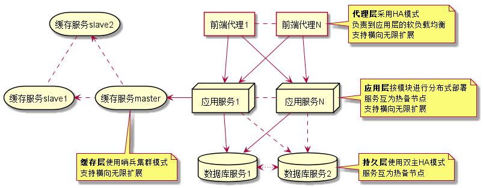

本文主要介绍一次完整的nginx + java + redis的服务端优化过程。
服务端整体架构图

采用典型的四层式架构，为了直观体现问题，这里尽可能地做了简化。
服务端环境
- 操作系统：CentOS6、CentOS7
- 服务层：Nginx 1.8.1
- 应用层：Jdk 1.8.0_172、Netty 3、Springboot 2.0.4
- 缓存层：redis 3.0.3
- 持久层：MySQL 5.6.28
环境说明：
- 存在一部分早期服务器，操作系统为CentOS6，因此生产环境中，同时存在CentOS6和CentOS7服务器；
- 老项目基于netty开发，新项目基于springboot开发。
问题
在对接口进行压测时，发现出现较高几率的